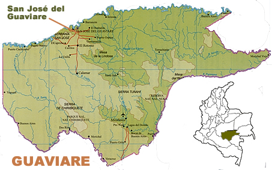

Guaviare

Zonas Turísticas
- Serranía de la Lindosa
Formaciones rocosas con arte rupestre ancestral.
- Puerta de Orión
Impresionante arco natural de piedra en la selva.
- Cañón del río Guaviare
Ideal para paseos en bote y ecoturismo.
- Cerros de Mavicure
Montañas sagradas con vistas panorámicas únicas.
- Caño Sabana
Río de aguas cristalinas con colores similares a Caño Cristales.
- Raudal del Guayabero
Cascadas y rápidos ideales para la aventura.
Comida Típica
- Mojarra frita
Pescado de río servido con yuca y plátano.
- Casabe
Pan elaborado con yuca, típico de las comunidades indígenas.
- Ajicero
Sopa picante con pescado, ají y especias amazónicas.
- Farina
Harina de yuca utilizada en varios platos locales.
- Miel de canangucho
Bebida dulce extraída del fruto de la palma de moriche.
Sector Económico
- Agricultura
Producción de cacao, plátano, yuca, maíz y frutas amazónicas.
- Ganadería
Cría de ganado bovino, aunque en menor escala que otras regiones.
- Pesca
Pesca artesanal en los ríos, con especies como bagre y bocachico.
- Turismo
Crecimiento del ecoturismo gracias a su riqueza natural y cultural.
- Comercio y economía local
Intercambio de productos agrícolas y artesanales dentro de la región.